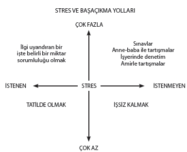

Şekil 13: Çeşitli yaşantılarla stres arasındaki ilişkiyi gösteren pratik model.
Şekil 13’te görüldüğü gibi stres hayatın her cephesinde ve her yaşantıda vardır. Gelişmek ve doyumlu bir hayat yaşamak için stres gereklidir. Problem doğuran durumlardan biri stresin çok fazla veya çok az olmasıdır. Günlük hayatta bizi endişelendiren bazı şeyleri yapmak hoşumuza gider. Bunlar istenen streslerdir.
Stres verici hiçbir yaşantının olmayışı hem Levi’nin kuramsal modelinde (Şekil 12), hem de pratik modelde (Şekil 13) görüldüğü gibi çok ciddi bir stres kaynağıdır.
Günlük hayatımızda davranışlarımıza yön veren üç duygu türü vardır. Olumlu duygular (possitive feelings), olumsuz duygular (negative feelings), ayrımsız duygular (feelings of indifference). Olumlu duygular, en geniş anlamda “sevgi” sözcüğü ile tanımlanabilecek, saygı, güven, inanç, kabullenme, dostluk gibi duygular içerir. Olumsuz duygular kin, güvensizlik, küçük görme, düşmanlık, kıskançlık gibi zarar verebilecek olan duygulardır. Ayrımsız duygular, hoşgörüye yardımcı olsalar bile, daha fazla bir yarar sağlayamayan duygulardır. İşte bütün bu duygular bizim psikolojik yapımızı, duruşumuzu belirler. Bu hissettiklerimizle, kaygılı, korkulu, engellenilmiş veya güvenli, rahat, doyumlu olabiliriz. Kısacası olayları algılar, değerlendirir ve onlara bu duyguları yükleriz. Böylece onlar ya stres ya da distres yükünü taşırlar.
Olayların distres yükünü azaltmak, en azından ayrımsız duygularla değerlendirmek bize rahatlık ve başarı getirecektir. Daha önce ayrıntılı bir biçimde anlatıldığı gibi duygular “insan” ve “toplum” arasındaki etkileşimlerde “sabit iç uyumunu”, “homeostasis adaptasyon”u temin eder.
Olumlu duygu olumlu tavrı, olumlu tavır yaratıcılıklara katkıyı artıracaktır.
Yaşanabilecek en olumlu stresler şu üç başlık altında düşünülebilir. “Yaratıcılığa katılımdaki stres”, “Zaferin stresi”, “Hazzın stresi”.
Değişiklik, Kayıp ve Stres
Bilimsel olarak ortaya konmamış bile olsa eskiden beri insanların hayatlarında meydana gelen değişikliklerin ve stres verici olayların hastalığa yol açtığı bilinmektedir. İnsanların hayatlarında meydana gelen değişikliklerin ruh hastalıklarına sebep olduğu bilim çevrelerinde daha kolay kabul görmesine karşılık, organik hastalıklarda bu faktörün önemi uzun yıllar çok geri plana itilmiştir.
Bu yüzyılın başlarında Adolf Meyer adlı bir psikiyatr, hastalıklarla, insanların hayat değişiklikleri arasındaki ilişkiyi sistemli bir biçimde incelemek için bir “Hayat Kartı” geliştirmiş ve her hastaya hayatındaki önemli fizik hastalıkları, ruhsal problemleri, önemli olayları, hayal kırıklıklarını, üzüntülerini sormuştu.
1962 yılında Psikiyatr Thomas Holmes ile Psikolog Richard Rahe bir araya gelerek Meyer’in başlattığı araştırmayı sürdürmüşler ve bir hastalık öncesinde, birçok kimsenin hayatında bazı değişiklikler olduğunu sezdikleri için, bu ilişkiyi hassas bir şekilde ölçmeye çalışmışlardır.
Bunun için kişinin günlük hayat düzeyinde değişiklik demek olan, “küçük veya büyük bir uyum yapmayı gerektiren hayat olayları” bir listede toplanmış ve her bir olayın ortalama ağırlığı tespit edilmiştir. Eşin ölümü, ayrılık, hapse girme, aileden yakın birinin kaybı, hamilelik, amir ile problem, yeni bir eve taşınma, okula başlama veya bitirme, borçlanma, terfi, tatile çıkma gibi 43 tane sosyal stres bu listede yer almıştır.
1949 yılının başlarında Holmes’in laboratuarında, Meyer’in geliştirdiği hayat kartı, 5000’den fazla hastanın psikolojik, sosyolojik ve hastalık hikâyelerini kaydetmek amacıyla kullanılmıştır. Bu kayıtlardan kalkarak tüberküloz, kanama, kalp-damar hastalıkları, cilt hastalıkları ve hamilelikten önce sık sık rastlanan 43 hayat olayı seçilmiştir.
Seçilen hayat olaylarının tek ortak noktası, olayın “kişinin süregiden günlük hayat düzeninde değişiklik yapması” olmuştur. Daha sonra yapılan bir başka araştırmayla kişinin süregiden günlük hayat düzeninde değişiklik yapan ve küçük veya büyük bir uyum yapmayı gerektiren her bir olayın ortalama ağırlığı tespit edilmiştir.
Her bir olayın ifade ettiği ağırlık tespit edilirken, değişikliğin sebep olacağı uyum çabasının miktarı ölçü olarak alınmıştır. Çünkü Holmes ve Rahe’a göre uyum “kişinin değişiklik meydana getiren hayat olayına alışmasıdır”. Bundan ötürü her olayın sebep olduğu stresin şiddeti, olayın yol açtığı değişikliğe uyum yapma güçlüğü ile orantılıdır. İşte en başta bu sebeple, stresi sadece olumsuz olay ve durumlarda aramamak gerekir. Aynı sebeple evlilik bu ölçekte 100 üzerinden 50, tatil 13 ağırlıklı puan almıştır.
Anlatılan sebeplerden ilk bakışta stresi ölçen bir listede bulunması yadırganacak evlenme, tatil, terfi gibi hayat değişikliklerine de ölçekte yer verilmiş ve böylece “Sosyal Uyumu Ölçme Listesi” oluşturulmuştur. Liste, olayların stres yükü ile ilgili genel bir bilgi vermek için bu bölüme alınmıştır. Kendinize uygulayabileceğiniz ölçek ve uygulama yöntemi üçüncü bölümdedir.
| SOSYAL UYUMU ÖLÇME LİSTESİ | |
| Hayat Olayı | Ağırlık Puanı |
| 1. Eşin ölümü | 100 |
| 2. Boşanma | 73 |
| 3. Eşle ayrı yaşamak | 65 |
| 4. Hapsedilmek | 63 |
| 5. Aileden yakın birinin ölümü | 63 |
| 6. Önemli bir kişisel yaralanma ve hastalık | 53 |
| 7. Evlilik | 50 |
| 8. İşten atılmak | 47 |
| 9. Eş ile barışma | 45 |
| 10. Emekli olma | 45 |
| 11. Bir aile üyesinin sağlığında veya davranışlarında önemli bir değişiklik | 44 |
| 12. Hamilelik | 40 |
| 13. Cinsel problemler | 39 |
| 14. Aileye yeni birinin katılması (doğum, evlat edinme, büyüklerin eve yerleşmesi vb.) | 39 |
| 15. İş açısından önemli bir yeniden uyum dönemi (işi yönetenlerin değişmesi, bir başka kurum veya işletme ile birleşme, yeni bir organizasyon, iflas) | 39 |
| 16. Ekonomik durumda önemli bir değişiklik (süregelenden çok daha kötü veya çok daha iyi) | 38 |
| 17. Yakın bir arkadaşın ölümü | 37 |
| 18. İşte farklı bir bölüme geçmek | 36 |
| 19. Eşle olan tartışmalarda bir artış (çocuk yetiştirme, kişisel alışkanlıklar gibi konularda alışılmıştan daha farklı yaklaşımlar) | 35 |
| 20. Büyük miktarda borçlanmak (ev almak, iş kurmak vb. sebeplerle) | 31 |
| 21. İpotek veya ikrazda mala veya paraya elkonması | 30 |
| 22. İş sorumluluklarında önemli değişiklikler (terfi, statü kaybı, bir başka servise geçiş vb.) | 29 |
| 23. Erkek veya kız çocuğun evden ayrılması (evlilik, yüksek tahsil, yatılı okul vb. sebeplerle) | 29 |
| 24. Polis veya kanunla ilgili problemler | 29 |
| 25. Önemli bir kişisel başarı | 28 |
| 26. Kadının ev dışında çalışmaya başlaması veya işten ayrılması | 26 |
| 27. Resmi olarak eğitime başlamak veya bitirmek | 26 |
| 28. Yaşama şartlarında büyük değişiklik (yeni bir ev kurmak, yeniden döşemek, daha kötü bir ev veya semte taşınmak) | 25 |
| 29. Kişisel alışkanlıklarda değişiklikler (giyim, tarz, ilişkiler vb.) | 24 |
| 30. Patron veya amirle problem | 23 |
| 31. İş saatleri veya şartlarında büyük değişiklikler | 20 |
| 32. Başka bir yere taşınmak | 20 |
| 33. Yeni bir okula başlamak | 20 |
| 34. Alışılmış tipinizde büyük bir değişiklik | 19 |
| 35. Dini alışkanlık ve uygulamalarda önemli bir değişiklik | 19 |
| 36. Sosyal faaliyetlerde önemli bir değişiklik (kulüp, kahve, sinema, ziyaret vb.) | 18 |
| 37. Çok büyük olmayan bir miktarda borçlanmak (araba, renkli TV, video veya ev eşyaları almak için) | 17 |
| 38. Uyku alışkanlığında önemli bir değişiklik (daha çok veya daha az uyumak veya uyku saatinde bir değişiklik) | 16 |
| 39. Aile bireylerinin bir araya geliş sıklığında önemli bir değişiklik (alışılmıştan daha çok veya daha az) | 15 |
| 40. Yeme alışkanlığında önemli bir değişiklik (daha fazla veya daha az yemek veya yemek saatlerinin değişmesi) | 15 |
| 41. Tatil | 13 |
| 42. Yılbaşı | 12 |
| 43. Yasalara karşı işlenmiş küçük suçlar (trafik cezaları vb.) | 11 |
Bu listede yer alan olaylar hiç şüphesiz araştırmanın yapıldığı Amerika Birleşik Devletleri toplumunun olaylara bakışını ve bu olaylardan etkilenme derecesini göstermektedir.
Japon kültürü ile yapılan kıyaslamalı çalışmada iki farklı Japon topluluğunun olayları birbirine oldukça benzer, ancak ABD’den biraz farklı yorumladığı ortaya konmuştur. Örneğin “Hapse girme” olayının Japonya’da daha yüksek puanlanması, bu olayın o ülkede toplumsal saygınlığı daha çok zedelediği biçiminde yorumlanmıştır.
Hayat Olayları Listesinin ön çalışması sırasında, 88 hekimden son 10 yılı içine alacak biçimde her yıl için bir tane liste doldurmaları istenmiş ve her yılın puanları ayrı ayrı hesaplanmıştır. Bunun yanı sıra her hekimin ayrıntılı bir sağlık hikâyesi alınmıştır. Yapılan inceleme sonunda alerjik enfeksiyona bağlı, psikosomatik ve iskelet kasları ile ilgili hastaların % 93’ünün, 150 veya daha yakın “hayat değişikliği” alınan iki yıl içinde ortaya çıktığı görülmüştür.
Bunu izleyen diğer araştırmaların sonucunda 300’den yukarı puan alanların % 80 ile en yüksek, 150-299 arasında puan alanların % 50 ile orta, 150 ve daha aşağı puan alanların % 30 ile düşük risk grubu için aday oldukları bildirilmiştir.
Hayat değişiklikleri ile sağlık problemleri arasındaki ilişki çok sayıda araştırmaya konu olmuştur. Aşağıda bu araştırmalardan birkaç tanesi, konunun boyutlarıyla ilgili fikir vermek amacıyla sıralanmıştır.
Küçük hastalıklar ile hayat değişiklikleri arasındaki ilişki ABD ve Norveç’te 4000 uzun yol gemicisi üzerinde araştırılmıştır. Altı aylık bölümler halinde 3 yıl süreyle sürdürülen çalışmanın sonunda daha genç ve özellikle bekâr olan gemicilerin daha yaşlı, evli ve tecrübeli denizcilere kıyasla daha yüksek hayat değişikliği puanı topladıkları görülmüştür. Daha sonra gemi sağlık defteri üzerinde yapılan incelemede, seyahatten önceki altı ay içinde yüksek hayat değişikliği puanı alanların daha çok sağlık problemi ile karşılaştıkları bulunmuştur.
G. Engel psikosomatik alanındaki araştırmalarıyla çok tanınan bir bilim adamıdır. Bu araştırmacı kaza ve intihar hariç, gazetelere yansımış 170 ani ölüm olayını soruşturmuş ve vakaların % 59’unda ölüm olayından bir süre önce, kişinin hayatında herhangi tipte bir kaybın meydana geldiğini saptamıştır. Örneğin, 36 kişinin aileden çok yakın birisini kaybettikten sonra, 35 kişinin çok önemli bir buhranı izleyen 16 gün içinde, 16 kişinin aileden çok yakın birinin kayıp tehlikesi karşısında, 9 kişinin sosyal statüsünü veya toplum içindeki saygınlığını kaybettikten sonra ve 5 kişinin de önemli bir kaybın yıl dönümünde öldükleri görülmüştür.
L. Hinkle, bir araştırmasında beklentilerine, sosyal sınıflarına uygun olarak yaşayan, yeteneklerine uygun bir işte çalışanların, işlerinden memnun olmayan, eğitim ve sosyal sınıfları açısından mesleklerinde beklentileri ölçüsünde gelişme göstermeyenlere kıyasla daha sağlıklı olduğunu ortaya koymuştur. Bu araştırmada ikinci grupta yer alanların aynı zamanda sağlık açısından daha problemli kimseler olduğu da bildirilmiştir.
Aynı araştırmadaki bir başka ilginç bulgu, sosyal sınıflarını, hayatlarını ve işteki pozisyonlarını değiştirmeyenlerin, farklı işlerde aynı pozisyonu sürdürenler ve sık sık terfi edenlere kıyasla daha az hastalandıklarıdır. Farklı işlerde, aynı pozisyonda çalışmak zorunda kalmak, donmuş bir hareketliliğin sebep olduğu hayal kırıklığının; diğeri ise sürekli olarak uyum yapma zorunluluğunun getirdiği stresin yol açtığı bir sonuçtur.
Kaza sonucu meydana gelen yaralanmalar
Yakın Zaman Hayat Olayları Listesinin sporcular için yapılan düzenlemesi ABD’de Amerikan futbol ligindeki 79 sporcuya uygulanmıştır. Futbol sezonuna başlamadan yapılan uygulamada, oynanacak sezon içinde sakatlanma riski yüksek olan sporcular tahmin edilmiş ve sezon tamamlanınca sakatlanan 26 sporcunun toplam hayat değişikliği puanının 632, sakatlanmayan 46 sporcunun 494 olduğu görülmüştür.
Aynı şekilde hastanede kol veya bacak kırığı ile yatan 37 kişi üzerinde yapılan araştırmada, bunların 30 tanesinin bir yıllık geçmişlerinde orta veya şiddetli derecede hayat değişiklikleri olduğu bulunmuştur.
Selzer ve Vinokur adlı iki araştırmacı, hayat değişiklikleri ile trafik kazaları arasındaki ilişkiyi incelemişler ve trafik kazası yapan grubun hayat değişikliği puanının daha yüksek olduğunu saptamışlardır.
Kalp-damar hastalıkları ve hayat değişiklikleri
ABD’de çalışan nüfusun, kalp-damar hastalıkları ve bu hastalıkların yol açtığı problemler sebebiyle yılda % 12 zaman kaybına uğradığı tahmin edilmektedir. İlerdeki sayfalarda bu konu çeşitli yönleri ve ayrıntıları ile ele alınacağı için, burada sadece kalp-damar hastalıkları ile kayıp ve hayat değişikliklerini ele alan araştırmalardan birkaç örnek verilecektir.
Son 35 yıl içinde yapılan ayrıntılı ve çok yönlü araştırmalar, kalp-damar hastalıkları konusunda öteden beri kabul edilen risk faktörlerinin bu hastalığın meydana gelişini açıklamakta yeterli olmadığını ortaya koymuştur.
Rahe ve Lind, Stokholm’de ani bir kalp krizi ile ölen 67 kişinin birinci derecede yakınları ile yaptıkları görüşmede, 39 kişide son altı ayda, daha önceki dönemlere kıyasla toplam 3 kere daha fazla “hayat değişikliği” meydana geldiğini saptamışlardır.
Bundan hemen sonra Orell ve Rahe koroner kalp hastalığından ölen ve hayatta kalanlar üzerinde kıyaslamalı bir araştırma yapmışlardır. Çalışmanın sonunda, hayatta kalanların ölenlere kıyasla daha sabit bir hayatları olduğu ve ölenlerin –en yüksek düzeyine 6 ay önce ulaşan– 7-12 ay öncesine ait önemli hayat değişiklikleri ile karşılaştıkları görülmüştür.
Helsinki’de miyokard infarktüsü geçirdikten sonra hayatta kalan 279 hasta üzerinde yapılan araştırmada, hastaların krizlerinden önceki ay içinde, sayı ve önem olarak artan ölçüde hayat değişikliğiyle karşılaştıkları ortaya konmuştur.
1970’lerden sonra birçok araştırma merkezinden gelen bilgiler, daha önce de söz konusu edilmiş bir başka faktörün koroner hastalıklar konusunda çok önemli bir rol oynadığını desteklemektedir.
A tipi davranış biçimi denilen ve koroner hastalıklara yatkınlıkta bilinen standart risk faktörleri arasında yerini almış olan bu faktör “Koroner Kalp Hastalıkları” bölümünde ele alınacaktır.
Stres hastalık şiddetini etkiler
Holmes ve arkadaşları, araştırmalarının sonuçlarına dayanarak –hangi hastalık olursa olsun– hastalığın şiddeti ile, belirtilerin ortaya çıkmasından önceki bir yıl içindeki, “hayat değişikliklerinin sayısı ve önemi” arasında doğrudan bir ilişki olduğunu ileri sürmüşlerdir.
“Hastalık şiddeti” ifadesi ilk bakışta sübjektif bir kavram gibi gözüktüğü için önce kısaca bu konuya değinmekte yarar vardır.
125 hastalıktan oluşan bir liste, hekimler ve tıp konusu ile ilgili olmayan kimseler tarafından ayrı ayrı değerlendirilmiş ve her hastalığın şiddeti için verilen ağırlıklı puanlarla “hastalık şiddeti”ni gösteren bir ölçek elde edilmiştir.
Bu ölçeği kullanarak yaptıkları araştırmada Wyler ve arkadaşları 42 farklı hastalık sebebiyle hastanede yatan 232 kişide, hastalığın başlamasından önceki 2 yılı incelemişler ve hayat değişiklikleri ve hastalık şiddeti arasında –özellikle kronik hastalıklar konusunda– son derece kuvvetli bir ilişki bulmuşlardır.
Bu ve benzeri araştırma verilerinden kalkarak hayat değişiklikleri ve bunlara uyum sağlamak için gerekli olan çaba ne kadar kuvvetli olursa, hastalığa karşı bedenin direncinin de o ölçüde düşmekte olduğu söylenebilir.
Akut enfeksiyon (mikropların yol açtığı) hastalıklarında patolojik (hastalığa sebep olacak) bir mikrobun (ajanın) varlığı ve hastanın direnç düzeyi kavramlarına bugün artık bir yenisinin eklendiğini düşünmek hatalı olmaz; “Hayat değişiklikleri” kavramının hastalığa yakalanma, hastalığın başlama zamanı ve hastalığın şiddeti ile yakından ilişkili olduğu birçok araştırmanın ortak bulgusu olarak sunulmaktadır.
Akut enfeksiyon hastalıklarının sık görüldüğü dönemlerde uzmanların zihnini en çok kurcalayan sorulardan biri, hastalığa aynı mikrop (ajan) sebep olduğu halde, hastaların hastalıklarının seyirlerinde görülen farklılıktı. Bu sorunun akla gelen ilk cevabı “her hastanın direnç düzeyinin farklı oluşu”ydu. Bugün bu farklılığı doğuran önemli faktörlerden bir tanesinin “hayat değişiklikleri” olduğu anlaşılmıştır. Ancak bu bilgi de sorunun bütününü cevaplayamamaktadır. Çünkü “hayat değişikliği” miktarı daha fazla olan bazı kimseler, daha az olanlardan daha dirençli olabilmektedirler. Bu konudaki ana belirleyici “streslerle başaçıkma becerisi”dir.
Hayat değişiklikleri ve bu değişikliklerin sebep olduğu stresin insanın hastalığa karşı direncini nasıl etkilediği daha geniş bir biçimde “Stres ve Bağışıklık Sistemi” bölümünde ele alınacaktır.
İş Stresi
İş hayatından yansıyan stresler ve bunların sonuçları –doğrudan veya dolaylı– gerçekte dünya üzerindeki herkesi ilgilendirmektedir.
İş hayatı, insanın çalışırken geçirdiği saatleri fazlasıyla aşan ve hayatın her cephesine yayılan bir öneme sahiptir.
Kişinin sahip olduğu iş, onun toplumsal statüsünü, hayattan aldığı doyumu, ailesine sağladığı imkânları ve hayattan aldığı zevki belirler.
Yüzyılın başında S. Freud, “İnsanın sağlığını koruyan iki faktör vardır. İşini sevmesi ve hayatı sevmesi,” demiştir. Hans Selye ise streslerle başaçıkabilmenin reçetesini şöyle yazmıştır: “Stresten kurtulmak için görevinizi en iyi şekilde yapın.”
Dünya düşünce tarihini etkileyen bu iki bilim adamının işaret ettiği gibi iş hayatı ve sağladığı doyum, bireyin beden ve akıl sağlığıyla doğrudan ilişkilidir.
Her ne kadar hayatı güzelleştirmek ve sağlığı korumak için bireysel çabaların hiçbir zaman elden bırakılmaması gerekirse de, iş hayatından yansıyan stresler o kadar geniş bir çerçeveyi kapsamaktadır ki, bu stresleri sağlığı tehdit etmeyecek düzeye indirmek esas olarak bireysel çabaları aşmaktadır.
Stres olarak bilinen problemleri doğuran iş şartları, çalışanlar üzerinde baskı ve zorlanma yaratır. Bu zorlanmanın uzun sürmesi de sağlıkla ilgili ciddi sonuçların doğmasına sebep olur.
Burada konu hem bireysel boyutuyla, hem de organizasyonu ilgilendiren boyutuyla ele alınacaktır.
Bundan on yıl kadar önce iş hayatıyla ilgili stres araştırmaları bütün yoğunluğuyla başladığında üst düzey yöneticilerine, “iş hayatının zavallı kurbanları” olarak bakılıyordu. Büyük ve orta düzey şirketlerin üst düzey yöneticileri, “hayatlarını şirketlerine adamış ve kendilerini bekleyen ölüme koşar adım giden fedailer” olarak görülüyordu.
Ancak araştırmalardan elde edilen sonuçlar konuyla ilgilenenleri hayrete düşürdü. Çünkü üst düzey yöneticilerin büyük bölümü içinde yaşadıkları bütün zorluklara rağmen sağlık açısından mükemmel durumdaydılar. Araştırma sonuçları “hayatlarını şirkete adamış kurbanlar”ın “orta düzey yöneticiler” olduğunu ortaya koydu. Çünkü üst düzey yöneticilerin önemli ölçüde belirli bir çerçeve içinde ve kendi koydukları kurallar içinde oldukça serbest hareket etme imkânına sahip kimseler olmalarına karşılık, orta düzey yöneticiler bu imkândan yoksundurlar.
Orta düzey yöneticileri çok kere üst yönetimin baskısı ile alt kademenin direnci arasında sıkışıp kalmakta ve işletme için sağlıklarını gerçekten kurban eden kişiler olmaktadırlar.
İnsanın işini sevmesi, doyumlu ve sağlıklı bir hayat için esastır. Ancak aşırı iş yükü, kişi işinden hoşlansa bile, doğrudan ağır bir strestir. Bazı insanlar yaptıkları işle kendilerini eğlendirirler, iş dışı zamanlarında kendilerine zevk verecek bir şey bulamazlar ve kendilerini işe vermeye tercih ederler. Bu tür kimselere “işkolik” denmektedir.
İşkolik olup olmadığınızı anlamanıza yardımcı olması için aşağıdaki soruları cevaplandırabilirsiniz:
1- Saat kaçta yatarsanız yatın, erken kalkar mısınız? ------ ------
2- Eğer öğle yemeğinizi yalnız yerseniz, yerken okur
veya çalışır mısınız? ------ ------
3- Her gün yapılacak işler listesi tutar mısınız? ------ ------
4- “Hiçbir şey yapmamayı” zor bulur musunuz? ------ ------
5- Enerjik ve rekabetçi misiniz? ------ ------
6- Hafta sonları ve tatil günleri çalışır mısınız? ------ ------
7- Her yerde ve her zaman çalışabilir misiniz? ------ ------
8- Tatile çıkacak vakti bulmakta zorluk
çeker misiniz? ------ ------
9- Emeklilikten korkar mısınız? ------ ------
10- İşinizden gerçekten zevk alıyor musunuz? ------ ------
Eğer bu sorulardan 8 veya daha fazlasına “evet” diye cevap verdiyseniz, muhtemelen siz de bir “işkolik”siniz.
Tükenme Belirtisi
(Burnout Syndrome)
Hayatının büyük bölümünü işkolik olarak geçiren ve çeşitli sebeplerle yoğun iş yükü altında yaşayan kişiler “tükenme” durumuyla karşı karşıya kalırlar.
Böyle insanlar bazen yoğun olarak “hayat çekilmez” duygusunu yaşarlar. Bu duygu, Dr. Freurenberger tarafından “tükenme belirtisi” olarak tanımlanmıştır.
Bu tablonun belirtilerinin anlaşılması bazen güç, bazen de oldukça kolaydır. Bedensel belirtiler uykusuzluk, canlılığı kaybetmek, baş ağrısı, ciddi göğüs ağrıları ve genel sağlıkla ilgili belirsiz şikâyetlerdir.
Davranışlar ve duygularla ilgili belirtiler daha önce ortaya çıkar ve daha kolay tanınır: Ani öfke patlamaları, sürekli kızgınlık, yardımsızlık, yalnızlık ve umutsuzluk duyguları, çaresizlik, engellenmişlik, güceniklik, şüphecilik, cesaretsizlik ve can sıkıntısı en sık dile getirilen şikâyetlerdir.
Tükenme belirtisi, genellikle “çok başarılı” olmak için yoğun ve dolu bir programla çalışan, her çalışmada, kendi üzerine düşenden fazlasını yapan ve sınırlarını tanımayan kişilerde görülür.
Belirtilerin ağırlaştığı dönemlerde, bu kişiler “Etrafımdaki her şey ters, bunlara ne oluyor?” diye sorarlar. Cevap “kendilerinin tükendiği”dir.
Kendinizde tükenme belirtileri görüyor musunuz? Yoksa kendinizi tükenme yolunda mı hissediyorsunuz? Bunu anlamak istiyorsanız kendi durumunuzu “Tükenme Ölçeği” üzerinden değerlendirin.
Aşağıdaki ölçekte, her cümlenin yanına, “Benim için doğru” anlamına gelen D veya “Benim için yanlış” anlamına gelen Y harfi koyun.
— 1. İş veriminiz düşüyor mu?
— 2. İş üzerindeki inisiyatifinizi kaybettiğinize inanıyor musunuz?
— 3. İşe karşı ilginizi kaybettiniz mi?
— 4. İşin stresini eskisinden olduğundan daha fazla mı
hissediyorsunuz?
— 5. Kendinizi yorgun veya bitkin hissediyor musunuz?
— 6. Baş ağrılarınız var mı?
— 7. Mide ağrılarınız var mı?
— 8. Yakın zamanda zayıfladınız mı?
— 9. Uyumakta güçlük çekiyor musunuz?
— 10. Nefes darlığı çekiyor musunuz?
— 11. Mizacınızın sık sık değiştiğini veya hayattan zevk
alamadığınızı hissediyor musunuz?
— 12. Kolayca öfkeleniyor musunuz?
— 13. Kolayca bozuma uğrar mısınız?
— 14. Her zaman olduğunuzdan daha şüpheci misiniz?
— 15. Her zaman olduğunuzdan daha umutsuz musunuz?
— 16. Mizaç üzerinde etkili maddeler kullanıyor musunuz?
(sakinleştirici ilaç veya alkol)
— 17. Esnekliğinizi kaybedip, katılaştınız mı?
— 18. Kendinize ve çevrenizdekilere karşı daha eleştirici mi
oldunuz?
— 19. Daha çok çalıştığınız halde, eskisinden daha az iş yapıyor
duygusuna kapılıyor musunuz?
— 20. Gülme isteğinizi kaybettiniz mi?
Yukarıdaki maddelerin yarısından fazlasına “doğru” cevabı verdiyseniz “tükenme” yolunda olduğunuzu düşünebilirsiniz. Eğer 15 veya daha fazla soruya “doğru” dediyseniz, siz “tükenmekte”siniz (veya belki çoktan “tükendiniz”). Durumunuzun buna uyduğunu düşünüyorsanız, “Stresle Başaçıkma” ve “Daha İyi Bir Hayat İçin” bölümlerini dikkatle okuyun. Mutlaka size uyan ve yararlanabileceğiniz bazı öneriler bulacaksınız.
İş sağlığının ve çalışma şartlarının dünyadaki en üst sağlık kuruluşu olan Dünya Sağlık Teşkilatı (WHO) tarafından nasıl değerlendirildiğini bilmenin yararlı olacağına inandığımız içi –birçoğu bize yabancı olan kavrama rağmen– bu tanımı aşağıya alıyoruz.
“Her türlü işte çalışanların bedensel, ruhsal ve sosyal refahlarını en üst düzeye yükseltmek; çalışanların sağlıklarında iş şartlarından kaynaklanan bozulmaları önlemek; çalışanları sağlığa aykırı risk faktörlerinden korumak; her çalışanı kendi iş çevresinde bedensel ve psikolojik şartlarına uygun yere yerleştirmek ve orada muhafaza etmek”.
Bu tanımda özellikle dikkat edilmesi gereken üç temel nokta vardır.
1. Sağlıklılık sadece hasta olmamak değil, kendini iyi ve sağlıklı hissetmektir. Burada mutlulukla, refah ve hastalıktan korunmak kastedilmektedir.
2. Sağlıklılık sadece bedenin fizyolojik fonksiyonlarının doğru çalışmasını değil, aynı zamanda doyumlu bir ruhsal ve sosyal hayat yaşamayı da içerir.
3. İş şartları çalışanların refahlarını yükseltmek üzere organize edilmeli ve çalışan her bireyin ihtiyacı, becerisi ve amaçlarına uygun biçimde düzenlenmelidir.
Bu tanımı kabul edecek olursak, hiç şüphesiz çalışanların çok büyük bir bölümünün sağlıklarını ve refahlarını yükseltmeyecek işlerde çalıştıklarını itiraf etmek zorundayız. Bu durumda da çalışan birçok kişinin iş stresleri sebebiyle katlanılması imkânsız zorlanmalarla sağlıklarını kaybetmesi ender rastlanan bir durum değildir.
Şekil 14’te iş stresleri, yol açtıkları bazı sonuçlarla birlikte özetlenmeye çalışılmıştır.
Bu tablodan da kolayca anlaşılabileceği gibi iş hayatı içinde her çalışanın belirli zamanlarda etkilenebileceği son derece çeşitli ve yüksek bir stres potansiyeli vardır.
Çalışanlar iş hayatı ile ilgili streslerden çeşitli derecelerde etkilenirler. Birçok kişi işten kaynaklanan bazı endişeleri sebebiyle zaman zaman uykusuz kalır. Bazıları işin sebep olduğu endişeler ve gerginlikler yüzünden baş ağrısı ve hazımsızlık çeker. Acaba işte birine olan kızgınlığını evine getirmemiş, eve işle ilgili konulardan ötürü yorgun, sıkıntılı, tahammülsüz, patlamaya hazır gelmemiş kimse var mıdır?
Bütün bu şikâyetler nispeten küçük ve önemsiz gibi gözükebilir, ancak bunlar bile stresin iş hayatının kaçınılmaz bir parçası olduğunu ortaya koymaktadır.
Bundan sonraki sayfalarda çalışanların iş hayatında karşılaştıkları belli başlı stresler anlatılacaktır.
Düşük ücret
Yetersiz kazanç, çalışanın ailesini gerektiği gibi besleyemeyeceği, giydiremeyeceği ve yeterli konfora sahip bir evde oturmasını sağlayamayacağı anlamına gelir. Ailenin tatil ve boş vakitlerini geçirmesi ve kendileri için asgari şartları sağlaması aşırı fazla mesaiye ve gece mesailerinden sağlanacak ek gelirlere bağlı olacağı için bu durumdan aile hayatı ve sosyal hayat büyük zarar görecektir.
Teşvik edici ödeme sistemleri
Prim sistemleri çalışma temposunu ve üretim hızını artırmaya zorlar. Böyle bir düzen içinde çalışanlar güvenli çalıştıkları için değil, hızlarını artırdıkları için ücretlerini yükselteceklerinden, bu durum kaygıya (endişeye), yorgunluğa ve sisteme dahil olanlar arasında rekabetten doğan düşmanca duygulara sebep olur.
Teşviği sadece para olarak düşünmemek gerekir. Ücretli tatil, daha kısa çalışmak, özel sağlık sigortası kapsamına alınmak, konut kredisinden yararlandırılmak, emeklilik primine katkı uygulanabilecek teşviklere örnektir.
Teşvik sistemlerinin çok önemli bazı incelikleri vardır. Teşvik sistemini geçersiz kılan teşviğin otomatik (kendiliğinden) olması veya ulaşılmaz hedeflerde gerçekleşecek olmasıdır. Bu iki durumda da teşvik anlamını kaybeder.
Diğer önemli nokta her yaş için farklı teşvik sistemlerinin geçerli olduğunun bilinmesidir. Her yaş grubunda ve bütün sosyo-ekonomik ve sosyo-kültürel düzeyde çalışanlar aynı teşvik sisteminden yararlandırılamaz. Bu sebeple teşvik sisteminin seçiminde bu özelliklerin göz önünde tutulması gerekir.